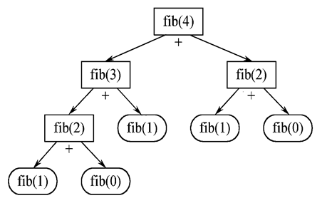
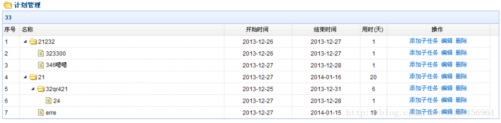
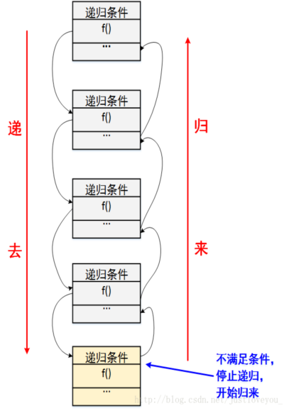

递归
递归（recursion ）是指在定义自身的同时又出现了对自身的引用。
如果一个算法直接或间接地调用自己，则称这个算法是一个递归算法。
任何一个有意义的递归算法总是由两部分组成：递归调用与递归终止条件。
德罗斯特效应（Droste effect）是递归的一种视觉形式，是指一张图片的某个部分与整张图片相同，如此产生无限循环。这种图片可以通过名为 Mathmap的数学软件制作出来
注意：其实上面不是递归，递归不是无限循环。递归有去有回，上图有去无回。
示例1：1+2+3+4......+100=?
算法1：循环算法
int sum = 0;
for(int i=1;i<=100;i++){
sum += i;
}
System.out.println(sum);
时间复杂度T（n） =O（n）
空间复杂度S（n） =O（1）
算法2：简单算法
System.out.println((1+100)*100/2);
System.out.println(100*101/2);//0+1+2+..100=?
时间复杂度T（n） =O（1）
空间复杂度S（n） =O（1）
算法3：递归算法
sum(100) = sum(99) + 100
sum(99) = sum(98) + 99
...
sum(3) = sum(2) + 3;
sum(2) = sum(1) +2;
sum(1) = 1;
public static int sum(int n){
if(n>1){
return sum(n-1)+n;
}else{
return 1;
}
}
时间复杂度T（n） =O（n）
空间复杂度S（n） =O（n）
总结
1.递归的调用过程
每递归调用一次方法，都会在内存中分配空间
每执行完一次方法，都会释放相应的空间
2.递归的优缺点
缺点：占用内存多，效率低下
优点：思路和代码简单
3.递归的适用场合
1.一个问题可被分解为若干层简单的子问题
2.子问题和其上层问题的解决方案一致
3.外层问题的解决依赖于子问题的解决
4.一定要有递归的结束条件*
示例2：获取斐波那契数列的第n项
* “兔子数列”，指的是这样一个数列：1、1、2、3、5、8、13、21、34、……
* 1 2 3 4 5 6 7 8 9
* F(1)=1，F(2)=1, F(n)=F(n-1)+F(n-2)
public class TestRecursion2 {
public static void main(String[] args) {
//使用循环实现
int numn_2 = 1;
int numn_1 = 1;
int numn=0 ;
int n= 40;
long startTime = System.currentTimeMillis();
for(int i=3;i<= n;i++ ){
//得到i项的值
numn = numn_1+ numn_2;
//改变numn_2和numn_1的值
numn_2 = numn_1;
numn_1 = numn;
}
long endTime = System.currentTimeMillis();
System.out.println("循环花费的时间："+(endTime - startTime));
System.out.println(n+" "+numn);
//使用递归实现
startTime = System.currentTimeMillis();
System.out.println(n+" "+fib(n));
endTime = System.currentTimeMillis();
System.out.println("递归 花费的时间："+(endTime - startTime));
}
public static int fib(int n){//1,2,3.....n
//给结果指定初始值
int result = 0;
//使用递归求结果
if(n==1 || n==2){
result = 1;
}else{
result = fibo(n-2) + fibo(n-1);
}
//返回结果
return result;
}
}

* 总结
* 1.任何可用递归解决的问题也能使用迭代解决。
* 2.在要求高性能的情况下尽量避免使用递归，递归既花时间又耗内存。
递归的更多使用场合
1.二叉树的定义和遍历
2.遍历图
3.某些查找算法，比如折半查找、二叉查找树
4.某些排序算法，比如归并和快速排序
5.复制/删除文件夹（包括子文件夹），而不是复制/删除文件；dir /s 而不是 dir
6.字符全排列、字符回文、汉诺塔
7.动态生成树形结构的菜单来实现数据的管理；或者是需要动态生成树形的图表结构。这些树形结构往往没有层级限制

阅读资料
http://blog.csdn.net/justloveyou_/article/details/71787149
另类的说法
递归，顾名思义，其包含了两个意思：递 和 归，这正是递归思想的精华所在
正如上面所描述的场景，递归就是有去（递去）有回（归来），如下图所示。
“有去”是指：递归问题必须可以分解为若干个规模较小，与原问题形式相同的子问题，这些子问题可以用相同的解题思路来解决，
就像上面例子中的钥匙可以打开后面所有门上的锁一样；
“有回”是指 : 这些问题的演化过程是一个从大到小，由近及远的过程，并且会有一个明确的终点(临界点)，
一旦到达了这个临界点，就不用再往更小、更远的地方走下去。
最后，从这个临界点开始，原路返回到原点，原问题解决。

作业：
1.趣味问题——年龄。
有5个人坐在一起，问第五个人多少岁？他说比第4个人大2岁。
问第4个人岁数，他说比第3个人大2岁。问第三个人，又说比第2人大两岁。
问第2个人，说比第一个人大两岁。最后问第一个人，他说是10岁。
请问第n个人多大？用递归和循环算法分别实现
2.使用递归和非递归实现字符回文判断
递归的作用在于把问题的规模不断缩少，直到问题缩少到能简单地解决
问：如何缩少问题规模？
答：通过观察可以知道，一个回文字符串其中内部也是回文。所以，我们只需要以去掉两端的字符的形式一层层检查，每一次的检查都去掉了两个字符，这样就达到了缩少问题规模的目的。
新问题与原问题有着相同的形式
当去掉两端字符后的字符串，其产生的新问题同样是检查这个字符串是否回文。
递归的结束需要简单情景
1. 字符串长度可能会奇数或偶数：
如果字符串长度是奇数，字符串会剩下最中间那位字符，但其不影响回文。当检查到长度为1的时候即代表此字符串是回文
如果字符串长度是偶数，当两端的字符串两两比较检查后不会剩下字符。即检查到长度为0的时候即代表此字符串是回文
2. 如果检查到两端两个字符不相同。则说明此字符串不是回文，直接返回0，不需要继续检查
12345654321 ---->1(234565432)1---->2(3456543)2---->3(45654)3---->4(565)4---->5(6)5----6
1234554321 ---->1(23455432)1---->2(345543)2---->3(4554)3---->4(55)4---->55-----
3.使用递归和非递归实现字符全排列问题
比如a、b、c三个字符的全排列是
a b c
a c b
b a c
b c a
c b a
c a b
递归算法：
由于全排列就是从第一个数字起每个数分别与它后面的数字交换
扩展：考虑有重复字符